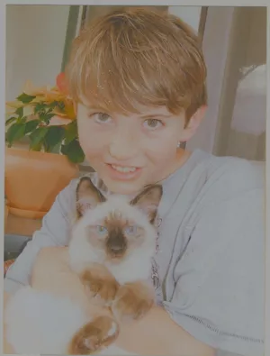
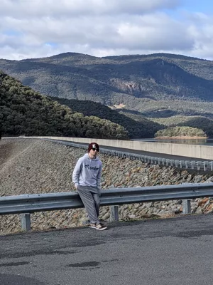
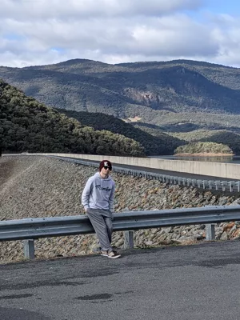
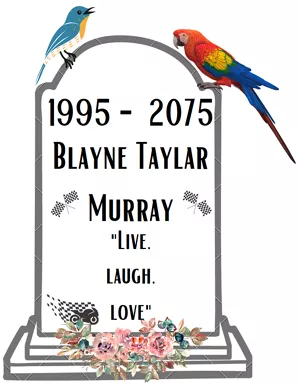
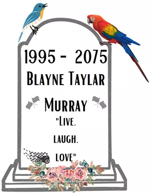

Blayne Murray
History
Early Life
Blayne was born late 1995 in a small country NSW town called
Deniliquin. He lived there spending alternating weeks with his
split parents until he had to decide to live with one or the
other at the age of 11, as his father was moving towns to
pursue career and other relationships. Blayne made the
decision to live with his father which involved relocating to
the central NSW town of Wagga Wagga. He completed his higher
education in year 12, graduating in 2013. His senior years of
high school were when he discovered his passion for mechanics
and computer technologies. These interests involved building
his first computer as well as installing sound systems in cars
of his own and friends. He had a part time job working in the
bakery department at Coles supermarkets which helped fund his
hobbies.
After high school Blayne went straight in to a Bachelor of Medical Radiation Science at the local Charles Sturt University, following in his fathers footsteps as a clinical radiographer. Four years of the course were completed before some mental and family challenges occurred, leading to failure of many subjects and complete loss of motivation to continue the course. Blayne made a decision to move with his girlfriend, who he had met in his first year of university, to the Hunter Valley region north of Sydney. He got a part time job filling shelves at a Coles supermarket, and spent 2 years enjoying his free time playing games, working, going to the gym, snowboarding, modifying his cars and developing his relationship. He stepped up into a department manager role at Coles, managing the Bakery with his previous years experience, where he performed extremely well. However, after another 2 years the workload became overwhelming, leading to his pursuit of a different career entirely.
Blayne’s decision to step down from management, and begin a bachelor of IT online at RMIT came from looking at the stars while lying in a hammock on new year's eve 2021. He thought to himself that for all the vastness of the universe, there was an opportunity for him to do something worthwhile, and his driving goal was to help humanity explore the stars. He considered his choice in educational courses a stepping stone towards developing a great career in IT and perhaps eventually space exploration.
After high school Blayne went straight in to a Bachelor of Medical Radiation Science at the local Charles Sturt University, following in his fathers footsteps as a clinical radiographer. Four years of the course were completed before some mental and family challenges occurred, leading to failure of many subjects and complete loss of motivation to continue the course. Blayne made a decision to move with his girlfriend, who he had met in his first year of university, to the Hunter Valley region north of Sydney. He got a part time job filling shelves at a Coles supermarket, and spent 2 years enjoying his free time playing games, working, going to the gym, snowboarding, modifying his cars and developing his relationship. He stepped up into a department manager role at Coles, managing the Bakery with his previous years experience, where he performed extremely well. However, after another 2 years the workload became overwhelming, leading to his pursuit of a different career entirely.
Blayne’s decision to step down from management, and begin a bachelor of IT online at RMIT came from looking at the stars while lying in a hammock on new year's eve 2021. He thought to himself that for all the vastness of the universe, there was an opportunity for him to do something worthwhile, and his driving goal was to help humanity explore the stars. He considered his choice in educational courses a stepping stone towards developing a great career in IT and perhaps eventually space exploration.

Website
Career Plan
Years 2022 – 2025
Blayne studied at RMIT University via Open University Australia. He completed his Bachelors of IT, minoring in CISCO.
Years 2026 – 2028
Blayne had an interest in pursuing a future field in Artificial Intelligence, and so chose to complete future skills short courses at RMIT Online. These were:
- AI Programming with Python
- Developing AI Strategy
- Artificial intelligence in Marketing
He also completed a Graduate Certificate in Data Science at RMIT Online.
As he was looking to eventually have an AI + space themed career, he also took part in a Graduate Certificate of Science (Astronomy) through Swinburne University of Technology.
Years 2029 – 2031
As he had worked for Coles Supermarkets for 15 years prior, both part time and full time with experience in department management, he was able to use this to his advantage in applying for relevant jobs with the company. He began a full-time corporate position at Coles in Store Support as an Associate Software Engineer. He used this as an opportunity to further build his knowledge in Java, and Cloud and Infrastructure technologies.
Years 2032 – 2033
Blayne applied for and was accepted as a Machine Learning Intern for an online customer service company called ZenDesk. He had to relocate to a remote location in Victoria where he refined and applied his machine learning knowledge from experimental design to scalable infrastructure production.
Years 2034 – 2037
Blayne acquired a full-time position as a Data scientist for the company Wesfarmers, allowing him to demonstrate his knowledge of Data Science, Python Programming, Mathematics and statistics, and deep learning frameworks.
Years 2038 – 2043
After much debate with himself, Blayne applied for and was accepted into a full time position as a Data Engineer for Starlink at SpaceX. This required a relocation to Redmond, WA, USA. This position was the perfect job for Blayne, allowing him to work with machine learning and data analysis, accompanied with his keen interest in space and the future that would be paved with technology engineered and deployed by SpaceX. Blayne’s previous qualifications from RMIT, machine learning internships, and programming language knowledge fit the criteria for the job requirements perfectly.
Years 2044 – 2064
After 5 years as a Data Engineer for Starlink at SpaceX, Blayne was promoted to Sr. Data Engineer for Starlink at SpaceX. He continued in this field for 20 years with a year off to visit his family in Australia. He retired at the age of 69.

Blayne studied at RMIT University via Open University Australia. He completed his Bachelors of IT, minoring in CISCO.
Years 2026 – 2028
Blayne had an interest in pursuing a future field in Artificial Intelligence, and so chose to complete future skills short courses at RMIT Online. These were:
- AI Programming with Python
- Developing AI Strategy
- Artificial intelligence in Marketing
He also completed a Graduate Certificate in Data Science at RMIT Online.
As he was looking to eventually have an AI + space themed career, he also took part in a Graduate Certificate of Science (Astronomy) through Swinburne University of Technology.
Years 2029 – 2031
As he had worked for Coles Supermarkets for 15 years prior, both part time and full time with experience in department management, he was able to use this to his advantage in applying for relevant jobs with the company. He began a full-time corporate position at Coles in Store Support as an Associate Software Engineer. He used this as an opportunity to further build his knowledge in Java, and Cloud and Infrastructure technologies.
Years 2032 – 2033
Blayne applied for and was accepted as a Machine Learning Intern for an online customer service company called ZenDesk. He had to relocate to a remote location in Victoria where he refined and applied his machine learning knowledge from experimental design to scalable infrastructure production.
Years 2034 – 2037
Blayne acquired a full-time position as a Data scientist for the company Wesfarmers, allowing him to demonstrate his knowledge of Data Science, Python Programming, Mathematics and statistics, and deep learning frameworks.
Years 2038 – 2043
After much debate with himself, Blayne applied for and was accepted into a full time position as a Data Engineer for Starlink at SpaceX. This required a relocation to Redmond, WA, USA. This position was the perfect job for Blayne, allowing him to work with machine learning and data analysis, accompanied with his keen interest in space and the future that would be paved with technology engineered and deployed by SpaceX. Blayne’s previous qualifications from RMIT, machine learning internships, and programming language knowledge fit the criteria for the job requirements perfectly.
Years 2044 – 2064
After 5 years as a Data Engineer for Starlink at SpaceX, Blayne was promoted to Sr. Data Engineer for Starlink at SpaceX. He continued in this field for 20 years with a year off to visit his family in Australia. He retired at the age of 69.

Death
In Blayne’s retirement, he occasionally rode his motorbikes on
casual trips around his hometown. With an invitation from some
of his longest friends, he made the decision to take part in a
recreational ride day. He took his old race bike out of
storage and loaded up an old application he had created with
his favourite group back in his early university days.
Unfortunately, speeding down the main straight of Phillip Island, his brakes failed, sending him across the grass in a horrific blazing ball of flames and bike pieces. He was announced deceased at the scene of the accident.

Unfortunately, speeding down the main straight of Phillip Island, his brakes failed, sending him across the grass in a horrific blazing ball of flames and bike pieces. He was announced deceased at the scene of the accident.

Reflection
Leading into A3, I was aware of how members of our group acted
and worked around each other. I was confident in the ability
for us as a group of five to achieve an extraordinary mark.
When two group members dropped , leaving us with 3/6, the
remaining 3 attempted to keep high spirits and confidence, but
I could tell that we all felt a little bit overwhelmed and
unsure. We definitely had doubts about achieving the amount of
work that we would have liked with a full group, however we
strived to contribute the best quality work we could. After
the group split, I was surprised at how much closer I feel
that I got with the other two in the group, Helia and
Michelle. The group's formality dropped a little bit, as
we committed to meeting more often under casual circumstances
and chatting away while we collaborated on joint
documents/artifacts. Looking back to the beginning of our
group projects, my hesitancy towards group work has nearly
disappeared due to the ease of working alongside Helia and
Michelle. I’m happy to say that I’ve genuinely enjoyed the
time that I’ve had to spend with these guys and hope to keep
learning with them over the course and into the future.